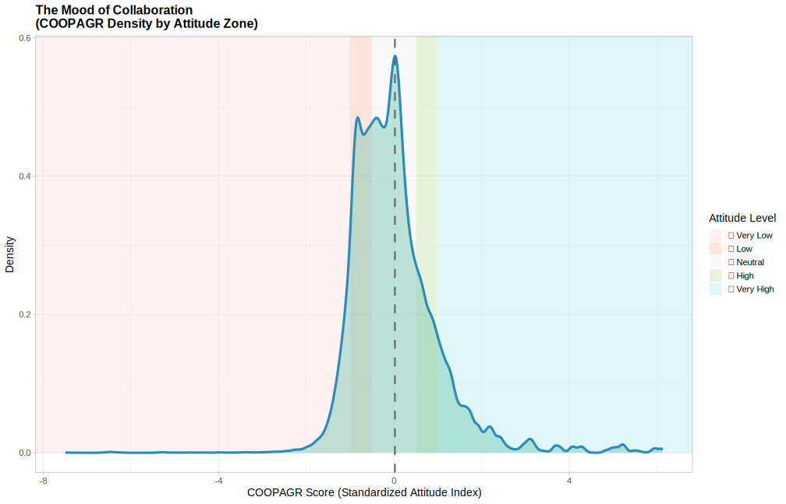

# Load required packages
library(arrow)
library(ggplot2)
library(dplyr)
library(gridExtra)
# Load PISA subset parquet file
PISA_2022 <- read_parquet("/Users/k1765032/Library/CloudStorage/OneDrive-King'sCollegeLondon/QERKCL_PISA/data/pisa/2022/PISA_student_2022.parquet")
# Clean and prepare COOPAGR data
df_clean <- PISA_2022 %>%
filter(!is.na(COOPAGR)) %>%
mutate(COOPAGR = as.numeric(COOPAGR))
# Define attitude levels and color palette
zone_labels <- c("üò† Very Low", "üòê Low", "üò∂ Neutral", "üôÇ High", "üòÑ Very High")
zone_breaks <- c(-Inf, -1, -0.5, 0.5, 1, Inf)
zone_colors <- c("#FDDCDC", "#FBBEAE", "#F0F0F0", "#C5E1A5", "#B2EBF2")
# Create background shading data
background_df <- data.frame(
xmin = zone_breaks[-length(zone_breaks)],
xmax = zone_breaks[-1],
zone = zone_labels,
fill = zone_colors
)
# Calculate mean value of COOPAGR
coop_mean <- mean(df_clean$COOPAGR, na.rm = TRUE)
# Reorder the levels of the zone_labels
background_df$zone <- as.factor(background_df$zone)
background_df$zone <- factor(background_df$zone, levels = zone_labels)
# Plot the density with shaded zones
plot <- ggplot(df_clean, aes(x = COOPAGR)) +
# Background zones
geom_rect(data = background_df,
aes(xmin = xmin, xmax = xmax, ymin = 0, ymax = Inf, fill = zone),
inherit.aes = FALSE, alpha = 0.4) +
# Density plot
geom_density(color = "#2B8CBE", fill = "#66C2A5", alpha = 0.4, linewidth = 1.5) +
# Mean vertical line
geom_vline(xintercept = coop_mean, linetype = "dashed", color = "gray40", linewidth = 1) +
# Manual fill scale for zones
scale_fill_manual(values = setNames(zone_colors, zone_labels)) +
# Labels and theme
labs(
title = "The Mood of Collaboration\n (COOPAGR Density by Attitude Zone)",
x = "COOPAGR Score (Standardized Attitude Index)",
y = "Density",
fill = "Attitude Level"
) +
theme_light(base_size = 14) +
theme(
legend.position = "right",
plot.title = element_text(face = "bold", size = 16),
plot.subtitle = element_text(size = 12, color = "gray40"))
ggsave("emoji_out_2.svg", plot = plot, device = "svg", width = 14, height = 9, units = "in")We Used to Believe in Teamwork: A Reflection on Collaboration from PISA to University
1. We Used to Believe in Teamwork
Back in high school, I didn’t seem to mind working with others on group tasks. In fact, I sometimes even enjoyed this. But over time, something quietly shifted. It wasn’t just my own perception. At university, whenever a lecturer announced, “This will be a group project,” you could almost hear a collective sigh ripple through the classroom.
You might’ve been there like me: trying to coordinate five conflicting schedules, dealing with that one member who disappears, and submitting a shared project where the “work” was anything but collaborative.
As I met students from different schools, different systems, even different countries, I realised: this isn’t just a personal gripe or a local glitch. The frustration with group work seems weirdly universal. Even social media algorithms have picked up on it - feeding me post after post of students around the world venting about ghosting teammates, last-minute panic, and “group” grades earned solo.
Curious, I turned to the literature, and unsurprisingly: It’s not just myself. We’ve all grown tired of working together.
2. It’s Not Just a Feeling: Students Are Tired of Teamwork
Much evidence suggests that university students frequently express dissatisfaction with group assignments. Chapman et al. (2006) found that many students view group work as unfair, inefficient, and stress-inducing, particularly when group composition is random or lacks balance in ability and effort. Such conditions often lead to disengagement and poor collaboration. Similarly, a qualitative study by Li and Campbell (2008) revealed that group projects often result in frustration, communication breakdowns, and a sense of inequity among students. These negative experiences stem from inconsistent participation, cultural misunderstandings, and conflicting work ethics within diverse teams. In other words, students aren’t simply being negative, they’re responding to consistently poor experiences. This raised a new question: Have we always felt this way about collaboration?
3. Looking Back - What Is COOPAGR?
To understand where our attitudes toward collaboration begin, I turned to the PISA 2022 dataset (OECD 2022), which surveyed over 690,000 15-year-olds across 81 countries and economies.
One variable stood out: COOPAGR, short for the Cooperation Attitude Index. Rather than measuring actual teamwork skills, this index reflects students’ emotional disposition toward collaboration.
It is derived from responses to ten statements in question set ST343 (OECD 2021) , such as:
• “I enjoy cooperating with my classmates.”
• “I work better when I am part of a team.”
• “I like to help others.”
(Negative items like “I argue a lot” and “I avoid working together with other students” are reverse-coded.)
Students respond on a five-point Likert scale ranging from Strongly Disagree to Strongly Agree. Their responses are then scaled using Item Response Theory (IRT) to create a single latent variable. This variable, COOPAGR, is standardized across countries, with a mean of zero and a standard deviation of one, as reported in the OECD (OECD 2024) technical documentation.
In short, COOPAGR offers a global snapshot of how teenagers feel about working with others.
4. The Visualization: What 15-Year-Olds Think About Teamwork
I visualized the distribution of COOPAGR scores using a density plot with background shading. Each colour band represents a zone from üò† Very Low to üòÑ Very High collaboration attitude.

5. The Results Were Surprisingly Wholesome
According to the data, most students scored between -1.0 and +1.0 on the COOPAGR scale, placing them in the üòê Mildly negative, üò∂ Neutral or üôÇ Mildly Positive attitude zones. Quite a few even showed up in the üòÑ Very High range, suggesting a genuinely positive view of collaboration. Very few students expressed strongly negative feelings - the üò† zone was almost empty.
At age 15, it seems most students hadn’t yet developed a deep dislike for group work. Many were still open to the idea of teamwork. The data suggests that, at this stage, students tend to approach collaboration with a neutral or mildly optimistic attitude. They haven’t yet learned to dread the phrase “group project.”
6. What Changed Between Then and Now?
The gap between two periods is striking, yet it is not difficult to understand.
As Vygotsky (1978) argued, social interaction plays a foundational role in the development of cognition. He emphasized that learning is most effective when situated within a relational and interactive context. However, Biesta (2015) reminds us that education is not solely about the transmission of content; it is equally about the context in which learning occurs, including its ethical, political, and relational dimensions. Unfortunately, many group assignments at the university level are implemented without the pedagogical care they require. They often lack clear objectives, transparent evaluation criteria, individual accountability, and ongoing support or feedback. When these essential components are missing, collaboration becomes burdensome rather than empowering. As Li and Campbell (-Li and Campbell (2008)) suggest, this often leads to relational overload or collaborative disengagement, where students feel more exhausted than enriched by the experience.
Maybe we didn’t lose faith in collaboration, we just lost faith in the way it was implemented.
7. Epilogue: Maybe We Should Listen to Our Fifteen-Year-Old Selves
PISA data reminds us that at fifteen, we didn’t mind working together. In fact, many of us welcomed it. We were open, curious, and willing to trust. Group work hadn’t yet become something to dread. The problem isn’t that we dislike collaboration. It’s that, over time, we’ve been shown too many versions of it that feel frustrating, unfair, and poorly managed.
If we want college students to believe in the value of working together again, we need more than just group assignments. We need a more thoughtful design that makes collaboration meaningful. That may include giving us clear roles and responsibilities. It means creating fair and transparent ways to evaluate contributions. And it requires teachers to be part of the process - not just at the beginning and the end, but all along the way. Collaboration should be something worth doing, not just something to get through. Once, we believed in collaboration.
References
Biesta, Gert JJ. 2015. Good Education in an Age of Measurement: Ethics, Politics, Democracy. Routledge. https://doi.org/https://doi.org/10.4324/9781315634319.
Chapman, Kenneth J, Matthew Meuter, Dan Toy, and Lauren Wright. 2006. “Can’t We Pick Our Own Groups? The Influence of Group Selection Method on Group Dynamics and Outcomes.” Journal of Management Education 30 (4): 557–69. https://doi.org/https://doi.org/10.1177/1052562905284872.
Li, Mingsheng, and Jacqui Campbell. 2008. “Asian Students’ Perceptions of Group Work and Group Assignments in a New Zealand Tertiary Institution.” Intercultural Education 19 (3): 203–16. https://doi.org/https://doi.org/10.1080/14675980802078525.
OECD. 2021. Computer-Based Student Questionnaire for PISA 2022. OECD. https://www.oecd.org/content/dam/oecd/en/data/datasets/pisa/pisa-2022-datasets/questionnaires/COMPUTER-BASED%20STUDENT%20questionnaire%20PISA%202022.pdf.
———. 2022. “Programme for International Student Assessment (PISA) 2022 Database. [Data Set].” OECD. https://www.oecd.org/pisa/data/2022database/.
———. 2024. PISA 2022 Technical Report. OECD. https://www.oecd.org/pisa/data/pisa2022technicalreport/PISA-2022-Technical-Report-Ch-19-PISA-Scaling-Procedures-Construct-Validation-Context-Questionnaire-Data.pdf.
Vygotsky, L. S. 1978. Mind in Society: The Development of Higher Psychological Processes. Cambridge, MA: Harvard University Press.